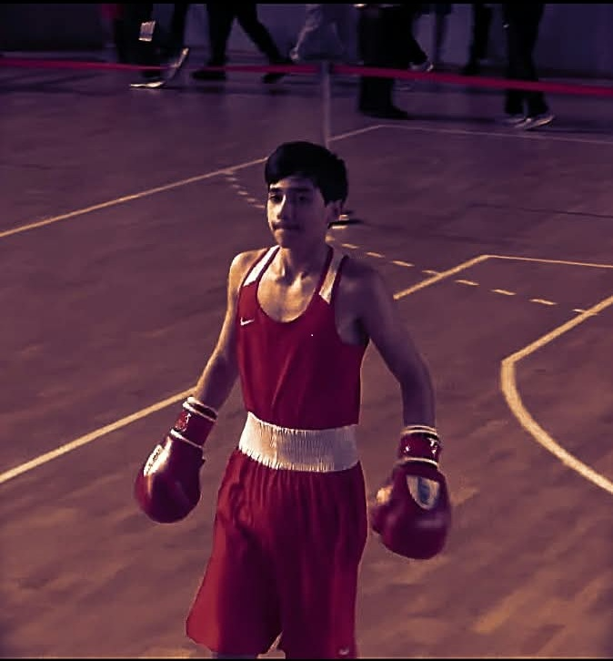
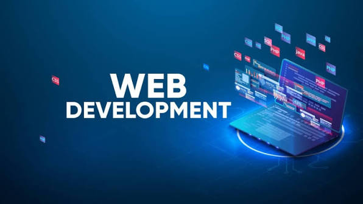

goa is the one of the best academy where you can study web development
goa's have two course one is web development and second is GOA Martial Arts where you can study MMA
Also there are the best mentors in GOA
They have the best humor and great teaching methods


my name is lasha grigalashvili
i am obssesd with boxing and web dewelopment
i want to create a lot of game and website
however i aslo want become proffesional boxer

